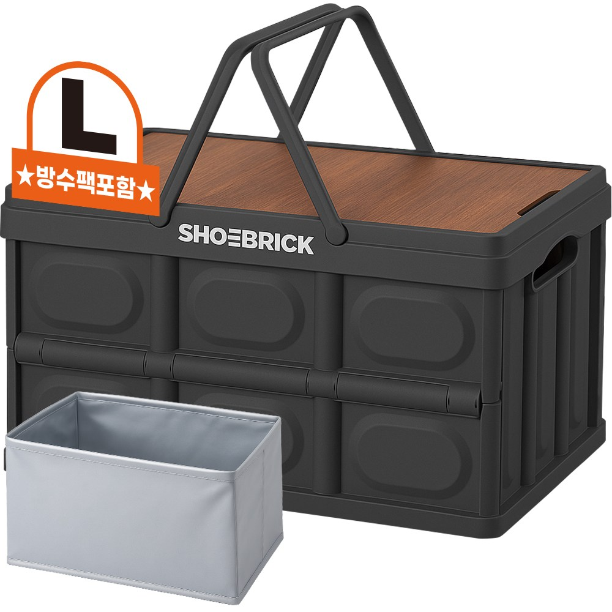
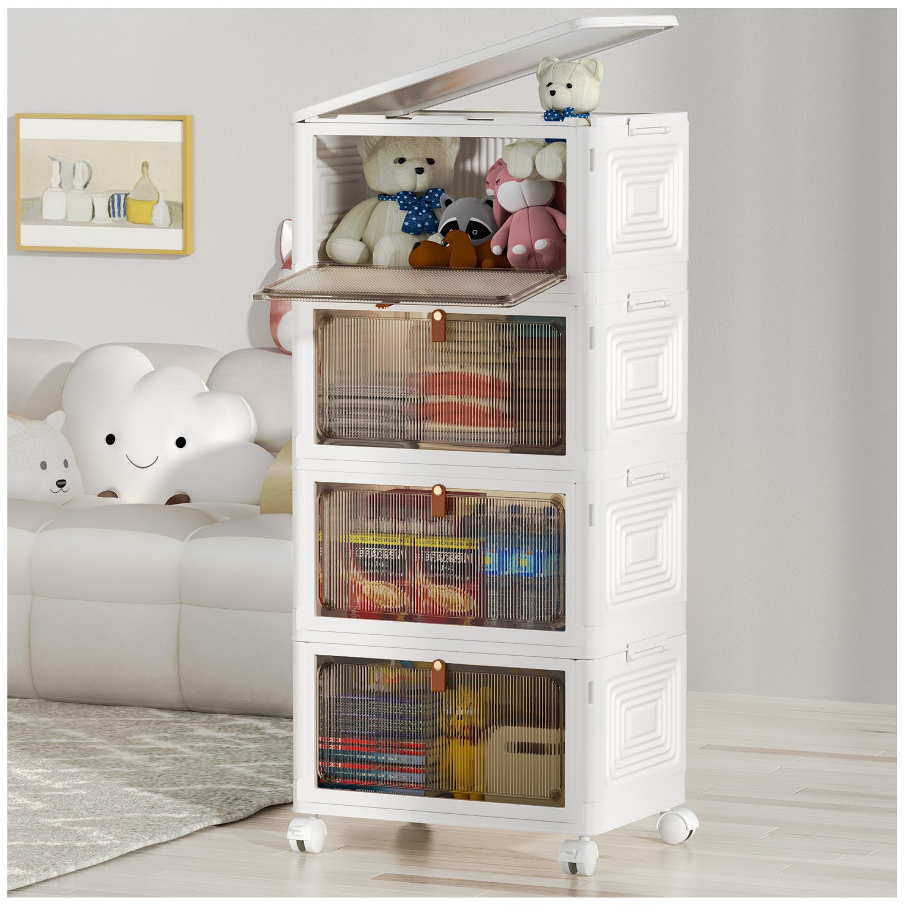

홈 › 제품리뷰 › 캠핑/레저
폴딩박스, 가성비냐 상판 겸용이냐
작성: 생활서식 모음 · 2026-07-29
파트너스 활동의 일환으로 일정액의 수수료를 지급받습니다
🛒 오늘의 쿠팡 특가 보러가기 →
폴딩박스, 캠핑 짐 정리·트렁크에 좋다는데 뭘 살까요?
핵심은 "적재(하중)와 상판(테이블), 방수" 3대 를
"저렴하게 수납" "상판 얹어 테이블로" "대용량 여러 개"용도별 정답 까지 담았으니
📋 목차
폴딩박스, 가성비냐 상판 겸용이냐 — 결론 먼저 스펙 비교표: 한눈에 보기 폴딩박스 고를 때 봐야 할 4가지 캠핑이냐 집 정리냐, 뭘 사야 할까? 자주 묻는 질문 (FAQ) 결론: 한 줄 요약
폴딩박스, 가성비냐 상판 겸용이냐 — 결론 먼저
폴딩박스는 "적재(하중)와 상판 겸용" 으로 갈려요.슈브릭 우드 상판 세트 가 무난합니다. 저렴하게 수납만이면 가성비, 집·창고 대용량 정리면 대용량 세트입니다.
1 수납·가성비 (가성비 초이스)
상판·대용량은 아니어도
추천 대상
캠핑 짐·트렁크를 저렴하게 정리하려는 분 접어서 보관하려는 분 가볍게 하나 마련하려는 분 장점
1만원대로 부담 없이 폴딩박스를 마련 캠핑 짐·트렁크·집 수납 등 다용도로 정리 접이식이라 안 쓸 때 접어서 보관 단점
이 제품은 수납·가성비용 입니다. 상판 얹어 테이블로면 2번, 집·창고 대용량이면 3번으로 가세요. "저렴하게 수납"이면 가성비 최고예요.
한줄 리뷰
"캠핑 짐·트렁크 정리를 저렴하게"면 1만원대로 충분합니다. 접어서 보관도 되고요. 상판·대용량이면 2·3번을 보세요.
주요 스펙
제품: 다용도 접이식 폴딩박스 형태: 접이식 용도: 캠핑·트렁크 수납 배송: 일반배송 가격: 약 11,900원 (변동 가능) ※ 실제 스펙·가격과 차이가 있을 수 있습니다
2 테이블 겸용 (베스트 초이스)
베스트

우드 상판 세트
2. 슈브릭 폴딩박스 (우드 상판+방수팩)
우드 상판=테이블 겸용 방수팩 포함 손잡이형 편의
수납+상판 얹어 테이블까지
추천 대상
수납하고 상판 얹어 테이블로도 쓰려는 분 캠핑에서 짐+테이블을 겸하려는 분 방수팩·손잡이 등 구성이 알찬 걸 원하는 분 장점
우드 상판을 얹으면 미니 테이블로 활용해 짐이 간소해짐 방수팩이 포함돼 아이스박스·젖는 짐 정리에 유용 손잡이형이라 들고 옮기기 편함 단점
가성비 수납만 원하면 1번이, 대용량이면 3번이 낫다 저렴하게 수납만이면 1번, 집·창고 대용량이면 3번입니다. 2번은 "수납+상판 테이블+방수팩" 의 실속 구간 — 캠핑 활용도가 가장 좋습니다.
한줄 리뷰
"폴딩박스에 상판 얹어 테이블로도 쓰고 방수팩까지"면 세트가 알찹니다. 활용도가 좋아요. 수납만·대용량이면 1·3번을 보세요.
주요 스펙
제품: 슈브릭 폴딩박스 (우드 상판+방수팩, KS4002) 구성: 폴딩박스+우드 상판+방수팩 용도: 수납+테이블 겸용 배송: 로켓배송 가격: 약 24,900원 (변동 가능) ※ 실제 스펙·가격과 차이가 있을 수 있습니다
3 집·창고 대용량 (프리미엄)
프리미엄

대용량 4개 세트
3. Kipnos 대용량 폴딩 리빙박스 (4개)
집·창고를 한 번에 정리
추천 대상
집·창고·옷·장난감을 대용량으로 정리하는 분 여러 개로 공간을 통일감 있게 정리하려는 분 안 쓸 때 접어 보관하려는 분 장점
대용량 리빙박스라 옷·장난감 등 많은 짐을 정리 4개 세트라 공간을 통일감 있게 정리 접이식이라 비울 때 접어서 보관 단점
캠핑 상판·방수 구성은 2번이, 저렴한 단품은 1번이 낫다 캠핑 수납·저렴하게면 1번, 상판 테이블 겸용이면 2번이 합리적입니다. 3번은 집·창고 대용량 정리 가 목적일 때 값어치가 있습니다.
한줄 리뷰
"집·창고 짐이 많아 대용량으로 통일감 있게"면 4개 세트가 좋습니다. 접어서 보관도 되고요. 캠핑·가성비면 1·2번이 합리적입니다.
주요 스펙
제품: Kipnos 대용량 폴딩 리빙박스 (4개) 구성: 대용량 · 4개 세트 · 접이식 용도: 집·창고 정리 배송: 로켓배송 가격: 약 80,000원 (변동 가능) ※ 실제 스펙·가격과 차이가 있을 수 있습니다
스펙 비교표: 한눈에 보기
가격·풍량·무게 중 본인에게 중요한 기준부터 보세요. "최고" 표시는 3제품 중 객관적 1위 값입니다.
← 좌우로 스크롤 →
폴딩박스 고를 때 봐야 할 4가지
하중·상판만 챙겨도 "찌그러짐·활용 부족" 실패를 막습니다.
1) 적재 하중 — 짐 무게
무거운 캠핑 장비를 담으면 하중이 튼튼해야 함 하중이 약하면 눌리거나 찌그러질 수 있음 위에 상판·물건을 얹으면 하중이 더 중요 2) 상판 겸용 — 테이블 활용
우드·상판이 있으면 미니 테이블로 활용해 짐 간소화 상판 얹었을 때 하중을 견디는지 확인 캠핑 활용도를 높이려면 상판 겸용이 유리 3) 방수·재질 — 젖는 짐
방수팩·방수 재질이면 아이스박스·젖는 짐에 유용 집 정리용이면 방수보다 대용량·통일감 우선 재질 내구·손잡이 편의도 참고 4) 접이·수납 — 트렁크·보관
접었을 때 부피가 트렁크·창고에 맞는지 펼침/접힘이 간편한지 여러 개 쌓아 정리되는 규격인지 캠핑이냐 집 정리냐, 뭘 사야 할까?
용도와 활용 방식만 정하면 답이 나옵니다.
저렴하게 수납: 1번 다용도 폴딩박스 → 1만원대테이블 겸용: 2번 슈브릭 상판 세트 → 활용도집·창고 대용량: 3번 Kipnos 4개 → 통일 정리자주 묻는 질문 (FAQ)
Q1. 폴딩박스는 캠핑에만 쓰나요? 캠핑 외에도 두루 씁니다. 폴딩박스는 캠핑 짐 정리·트렁크 정리로 인기지만, 집에서 옷·장난감·잡화 정리, 이사·보관용으로도 유용합니다. 접이식이라 안 쓸 때 접어서 보관할 수 있어 공간을 절약합니다. 캠핑용은 상판·방수 구성이 있는 제품, 집 정리용은 대용량·통일감 있는 세트가 편리합니다.
Q2. 상판 겸용 폴딩박스가 정말 테이블로 쓸 만한가요? 보조 테이블로는 유용합니다. 폴딩박스 위에 우드 상판을 얹으면 미니 테이블이 되어 짐 정리와 테이블을 겸할 수 있어 캠핑 짐이 간소해집니다. 다만 전용 캠핑 테이블만큼 넓거나 튼튼하진 않을 수 있으니, 컵·간단한 물건을 올리는 보조 용도로 보면 만족스럽습니다. 상판이 하중을 견디는지, 크기가 충분한지 확인하세요.
Q3. 폴딩박스에 무거운 걸 담아도 찌그러지지 않나요? 하중이 튼튼한 제품이라야 안전합니다. 저가 폴딩박스는 하중이 약해 무거운 짐을 담거나 위에 물건을 얹으면 눌리거나 변형될 수 있습니다. 무거운 캠핑 장비를 담거나 상판을 얹어 쓸 계획이면 내하중이 튼튼한 제품을 고르세요. 하중·내구 관련 후기를 확인하면 실사용 안정성을 가늠할 수 있습니다.
Q4. 접었을 때 트렁크에 잘 들어가나요? 접이식이라 부피가 크게 줄지만 제품마다 다릅니다. 폴딩박스는 접으면 납작해져 트렁크·창고에 보관하기 좋습니다. 다만 대용량 제품은 접어도 어느 정도 부피가 있으니, 접었을 때 크기와 내 차 트렁크 공간을 비교하세요. 여러 개를 쓸 계획이면 접힌 상태로 겹쳐 쌓이는 규격인지도 확인하면 보관이 편합니다.
Q5. 방수팩이 있으면 뭐가 좋나요? 젖는 짐·아이스박스 대용으로 유용합니다. 방수팩이 포함된 폴딩박스는 물이 새지 않아 얼음·음료·젖은 물건을 담거나 간이 아이스박스처럼 쓸 수 있습니다. 캠핑에서 물놀이 후 젖은 옷이나 물기 있는 짐을 정리할 때도 좋습니다. 캠핑에서 물과 관련된 짐이 많다면 방수팩 구성이 있는 제품이 활용도가 높습니다.
결론: 한 줄 요약
1) 다용도 폴딩박스 — 약 11,900원 / 수납·가성비. 1만원대 접이식 수납.2) 슈브릭 상판 세트 — 약 24,900원 / 테이블 겸용. 우드 상판+방수팩.3) Kipnos 대용량 4개 — 약 80,000원 / 집·창고 대용량. 통일감 정리.이 포스팅은 쿠팡 파트너스 활동의 일환으로, 이에 따른 일정액의 수수료를 제공받습니다.